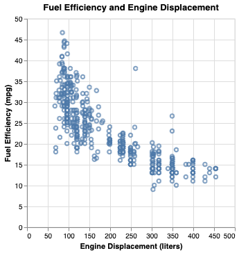
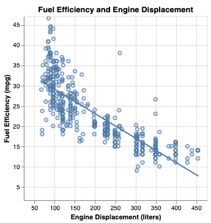
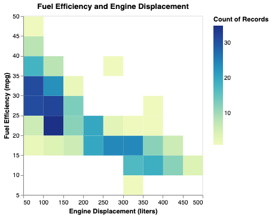
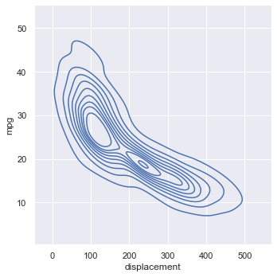
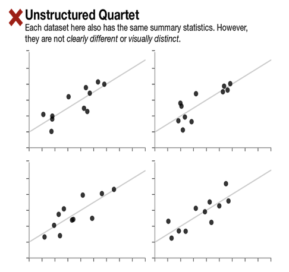
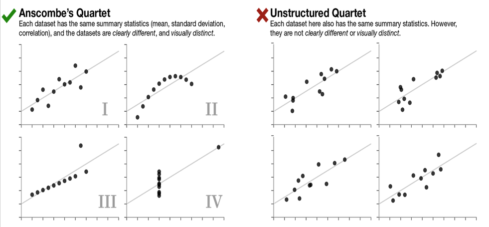

Correlation
CIS 241: Data Mining
Dr. Ladd
Are Two Variables Related?
Not how they are related.
Our first form of bivariate analysis.
Correlation always involves two or more variables (columns).
Correlation coefficient measures the extent to which two variables are related, from -1 to 1.
Pearson’s correlation coefficient multiplies the deviations from the mean for two variables, and divides by the product of the standard deviation.
Tells us the strength of a correlation.
Pearson’s correlation, r, is the default in Pandas.
Visualizing Correlation
Scatterplots show potential correlation between two variables
The y-axis shows the dependent variable, while the x-axis shows the independent variable.

# Add a line of best fit to make a regression plot
scatter = alt.Chart(cars, title="Fuel Efficiency and Engine Displacement").mark_point().encode(
x=alt.X("Displacement:Q", title="Engine Displacement (liters)"),
y=alt.Y("Miles_per_Gallon:Q", title="Fuel Efficiency (mpg)")
).interactive()
scatter + scatter.transform_regression('Displacement','Miles_per_Gallon').mark_line()
Avoid overplotting with heatmaps or kernel density estimation.


Make these with different marks or transforms.
Correlation matrix shows all possible correlations.

# Re-arrange correlation matrix data
cars_corr = (cars.corr(numeric_only=True)
.stack()
.reset_index()
.rename(columns={0:'corr','level_0':'var1','level_1':'var2'})
)
# Create correlation heatmap
base = alt.Chart(cars_corr, title="Cars Correlation Matrix").mark_rect().encode(
x=alt.X("var1:N",title=None),
y=alt.Y("var2:N",title=None),
color=alt.Color("corr",title="Correlation coefficient").scale(scheme='blueorange')
).properties(width=300,height=300)
# Add text labels for coefficients
text = base.mark_text(baseline='middle').encode(
alt.Text('corr:Q', format=".2f"),
color=alt.condition(
(alt.datum.corr < -0.5) | (alt.datum.corr > 0.5),
alt.value('white'),
alt.value('black')
)
)
base+text # Display visualizationHypothesis Tests for Correlation
How do we know if a correlation coefficient is statistically significant?
There are standard parametric approaches to this, but we can use permutation!
Instead of resampling, we can rearrange the variables at random.
Let’s Try It!
Using the function from the previous slide, run 5000 permutations of the correlation between engine displacement and miles per gallon.
Graph the results as a histogram and calculate a p-value. Is this a statistically significant correlation?
Don’t be fooled!
Always use summary statistics and visualization together.

If we have the same mean, standard deviation, and correlation we might expect the data sets to be similar…
But they could be very clearly and visually distinct!

Data Challenge
Use pandas to find the summary statistics for each
dataset in the
datasaurus_dozen.
- Find mean, standard deviation, and correlation for both x and y of each dataset. (You may need to group things by the “dataset” column.)
- When you’re done, try making scatter plots! (You
may need to use the
columnencoding.)